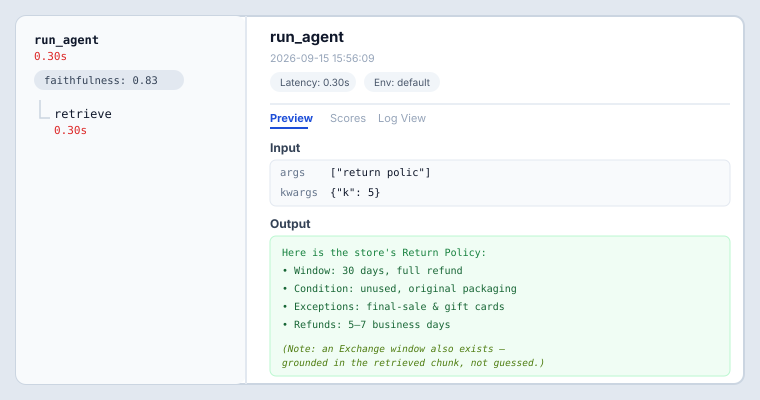
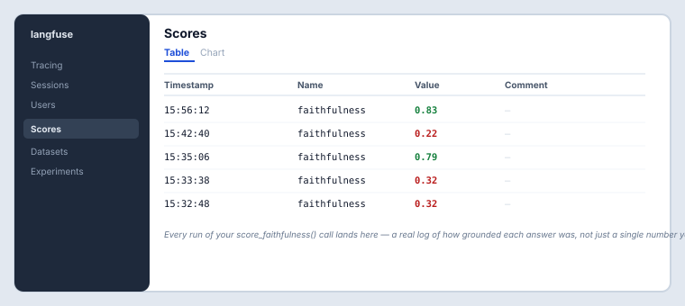

Take HOS 3's app all the way to production shape: a real mobile client that gets notified when work finishes, and full visibility into what the agent is actually doing on every request.
npx expo login) and the Expo Go app on your phone (tap the avatar icon → sign in) — on iOS, current Expo Go won't load the project at all without this. See the Account & Service Setup Guide for the exact steps.This HOS is graded across four stages instead of on code correctness alone. Each stage below says exactly what to submit.
Not graded on its own — this is the starting point, not the deliverable.
Prompt your AI assistant to add both pieces:
Add a mobile client and observability to this app: - mobile/: an Expo (React Native) chat screen that calls this backend's /chat endpoint, requests push-notification permission, and registers the device's push token with the backend once granted. - backend/main.py: add POST /register-device (device_id, push_token) storing the token. - backend/jobs.py: after a document finishes ingesting, send a push notification to that job's device, if one was provided. - backend/agent.py and retrieval.py: add Langfuse tracing (@observe()) so each request produces a trace with retrieval and generation as separate spans.
Run npx expo start --tunnel in mobile/ and scan the QR code with Expo Go to test on your own phone. In Codespaces, always use --tunnel — the plain command uses LAN mode, which can't work since your phone and the Codespace aren't on the same network (it'll look like it's hanging, not actually connect). The very first time you run --tunnel, Expo installs a small tunneling package on the spot, which takes a minute or two — after that, it starts fast. (Note: --tunnel itself doesn't need any login — but current Expo Go on iOS separately requires the same Expo account logged in on both your terminal and the phone app just to load the project at all; see the Account & Service Setup Guide.)
No phone handy yet, or want to sanity-check the chat screen fastest? Run npx expo start --web instead — opens the app in a browser tab, no Expo Go or login needed at all. Push notifications don't exist on web (the app already skips that step cleanly there), so switch to a real phone once you get to the push-notification stages.
The critical gate — is the AI-produced result actually correct?
Test it on purpose. At minimum, try:
What you're looking for, illustrated below: the trace view shows retrieve nested under run_agent as its own span with its own latency, plus the faithfulness score attached to that run. The Scores table is where every run's score accumulates over time, so you can see whether faithfulness is trending up or down, not just what one run happened to score.


Why does this work, mechanically?
Pick one specific piece — either why push notifications are addressed to a device token rather than a user ID, or why retrieval and generation end up as two nested spans in a trace instead of one flat one, and what that split actually lets you see that a single number wouldn't.
The mastery check — can you extend it correctly, without AI doing this part too?
Write a score_faithfulness(answer, context) function yourself — a heuristic or cheap check for whether the agent's answer is actually grounded in what was retrieved, not just plausible-sounding. Call it from run_agent() and log the score against the current trace.
npm: command not found — this HOS's .devcontainer/devcontainer.json installs Node.js automatically, but only when the container is built. If this Codespace was created earlier (e.g. carried over from an earlier HOS that never needed Node), it won't have picked up that change. Command Palette (Cmd/Ctrl+Shift+P) → "Codespaces: Rebuild Container" — your files are untouched, only the container's installed tools get reapplied from the config.mobile/: npx expo install expo@latest, then npx expo install --fix to realign every other package, then restart npx expo start --tunnel. This will happen again after any future Expo SDK release — same two commands fix it.npx expo login) and the Expo Go app on your phone (tap the avatar icon on its home screen → sign in). Logged in as different accounts, or only on one side, and the project won't open.getExpoPushTokenAsync() requires an EAS project ID as of SDK 49+, and a fresh project doesn't have one yet. Run npx eas init once inside mobile/ (free — sign in with the Expo account above; no credit card) and it writes the ID into app.json for you. Chat works fine without this; only push notifications need it.eas build --profile development instead of using Expo Go (no local Android Studio needed — EAS builds it in the cloud).200 OK even for a stale or invalid token, with the actual error inside the response body. Checking only the HTTP status isn't enough to confirm delivery.EXPO_PUBLIC_API_BASE variable in mobile/.env, reloading the app after editing it), and start Expo with --tunnel instead of the default LAN mode.npx expo start --web: "Failed to fetch" / server log shows OPTIONS /chat ... 405 Method Not Allowed — unlike Streamlit or Expo Go on a real device, Expo web runs inside an actual browser, and browsers block cross-origin requests until the server explicitly allows them (a "CORS preflight" — the browser's own OPTIONS check before the real request). If your AI-scaffolded backend doesn't already have this, add it to backend/main.py:
from fastapi.middleware.cors import CORSMiddleware
app.add_middleware(
CORSMiddleware,
allow_origins=["*"],
allow_methods=["*"],
allow_headers=["*"],
)
Restart uvicorn afterward — like any code change, it isn't picked up until the server restarts (or reloads, if you're running with --reload).curl — expected, not a bug. A curl test from inside the Codespace terminal is a loopback call; your phone's request travels over the real internet through GitHub's port-forwarding proxy to reach the Codespace and back, on top of whatever the agentic loop itself takes (a Gemini call, sometimes two if a tool fires, plus retrieval and guardrail validation). A couple of seconds is normal for this setup.